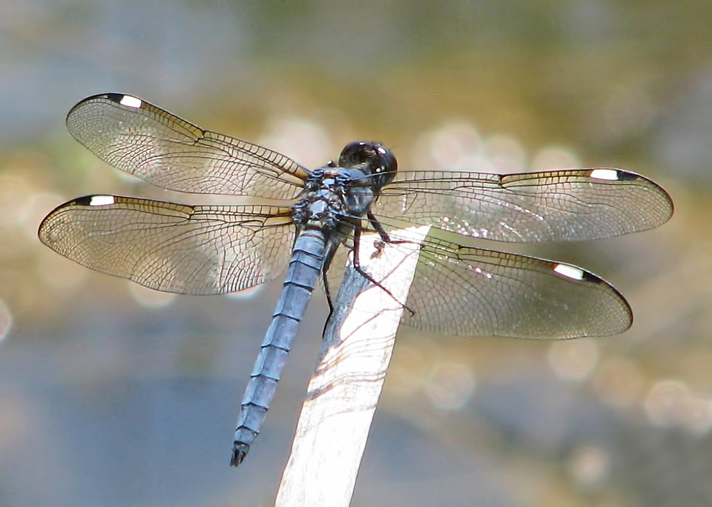
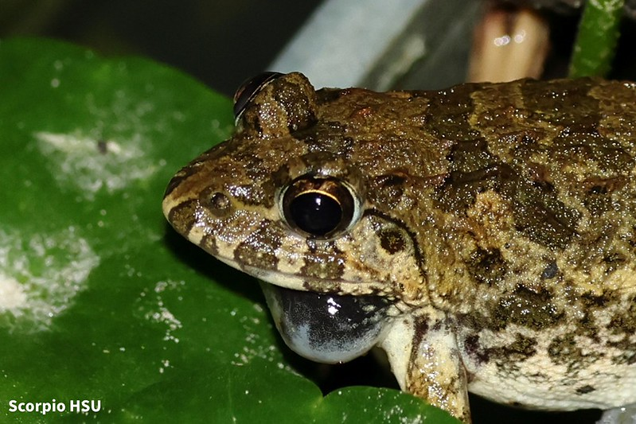

🐛 下厝埤動物生態完整介紹
🌎 動物與下厝埤生態系的關係
下厝埤屬於桃園地區典型的埤塘濕地生態系，由於擁有穩定的水源、豐富的植物資源以及適合生物生存的環境，因此吸引許多動物在此定居。從天空中的鳥類、水面附近的昆蟲，到生活於水陸交界處的兩棲類動物，都在這裡形成緊密的生態網絡。
埤塘並不是單純的蓄水池，而是一個完整運作的生態系統。植物透過光合作用製造養分，昆蟲取食植物或微小生物，青蛙再捕食昆蟲，最後成為鳥類的食物來源。這種層層相扣的關係，形成穩定的食物鏈。
下厝埤也因為具備濕地、水域與草地等不同棲地環境，提供許多生物繁殖、覓食與躲避天敵的場所，因此具有相當高的生態價值。
🐦 白鷺鷥

白鷺鷥是下厝埤最具代表性的鳥類之一，牠們全身覆蓋潔白的羽毛，擁有細長的脖子、修長的雙腿以及尖長的嘴巴，通常出現在淺水區或埤塘邊緣。
白鷺鷥屬於肉食性鳥類，主要以小魚、蝦類、蝌蚪、水生昆蟲及小型甲殼類動物為食。牠們捕食時非常有耐心，經常會長時間站立不動，等待獵物靠近，再迅速伸長脖子進行捕捉。
除了是優秀的掠食者之外，白鷺鷥也被視為重要的環境指標生物。由於牠們對棲地環境與水質要求較高，因此如果埤塘受到嚴重污染，白鷺鷥就會逐漸減少。
在下厝埤觀察到白鷺鷥活動，通常代表該水域仍保有一定程度的自然生態功能，也顯示食物來源相對穩定。
🐉 蜻蜓

蜻蜓是下厝埤最常見的昆蟲之一，也是濕地生態系的重要成員。牠們經常在水面上空快速飛行，或停留在植物葉片與蘆葦上休息。
蜻蜓具有兩對透明翅膀，能夠獨立運作，因此飛行能力非常強，可以快速前進、後退、懸停甚至瞬間改變方向，因此被稱為「空中獵手」。
蜻蜓的一生與水域有密不可分的關係。幼蟲階段稱為稚蟲，完全生活在水中，依靠捕食蝌蚪、孑孓以及其他小型水生生物維持生存。
當稚蟲成熟後，便會爬出水面羽化成成蟲。成蟲則會在空中捕食蚊子、小飛蟲及其他昆蟲，因此對於控制病媒蚊數量具有很大的幫助。
由於蜻蜓對環境污染十分敏感，因此常被當作判斷濕地健康程度的重要指標。如果埤塘的水質變差，蜻蜓數量往往會率先減少。
🐸 澤蛙（Fejervarya limnocharis）

澤蛙是台灣平地最常見的兩棲類動物之一，也是下厝埤經常能觀察到的青蛙種類。
澤蛙體型不大，身體顏色通常呈現灰褐色、黃褐色或深褐色，背部具有不規則的斑紋，能與泥土及草叢融為一體，形成天然保護色。
牠們通常在黃昏、夜晚以及下雨過後最為活躍，白天則躲藏在植物底部或潮濕陰暗處休息。
澤蛙主要以蚊子、飛蛾、小型甲蟲及其他昆蟲為食，因此能有效控制昆蟲數量，降低病媒蚊繁殖。
每年春夏季是澤蛙的繁殖期，雄蛙會透過鳴叫吸引雌蛙，形成熱鬧的蛙鳴景象，這也是許多人在埤塘附近經常聽見的自然聲音。
由於兩棲類動物的皮膚非常薄，容易吸收外界環境中的物質，因此對於水質污染、氣候變化及棲地破壞特別敏感。
一旦環境遭到破壞，澤蛙數量就會快速下降，因此也被稱為「環境警報器」，是重要的生態指標生物。
🔗 下厝埤的食物鏈關係
下厝埤中的動物並不是獨立存在，而是透過食物鏈彼此連結。
植物透過光合作用製造養分，成為食物鏈的起點；蜻蜓及其他昆蟲以植物或微小生物為食；澤蛙再捕食昆蟲；最後白鷺鷥則捕食魚類、蝌蚪與其他小型生物。
如果其中一個環節消失，就有可能造成整個生態系失衡，因此每一種生物都具有不可取代的重要性。
🌱 動物保育的重要性
近年來，隨著都市化快速發展，許多埤塘逐漸消失，生物棲地也受到威脅。若大量開發土地、排放污染物或破壞濕地環境，都可能導致動物數量下降。
因此，保護下厝埤不只是保護一座池塘，更是在保護整個生態系統。唯有維持乾淨的水質、保留濕地植物以及減少人為干擾，才能讓這些動物持續生存。
透過觀察白鷺鷥、蜻蜓與澤蛙，我們能更加了解自然環境的重要性，也能學習如何與自然和平共處，讓珍貴的埤塘資源能夠永續保存，成為下一代認識自然的重要場所。